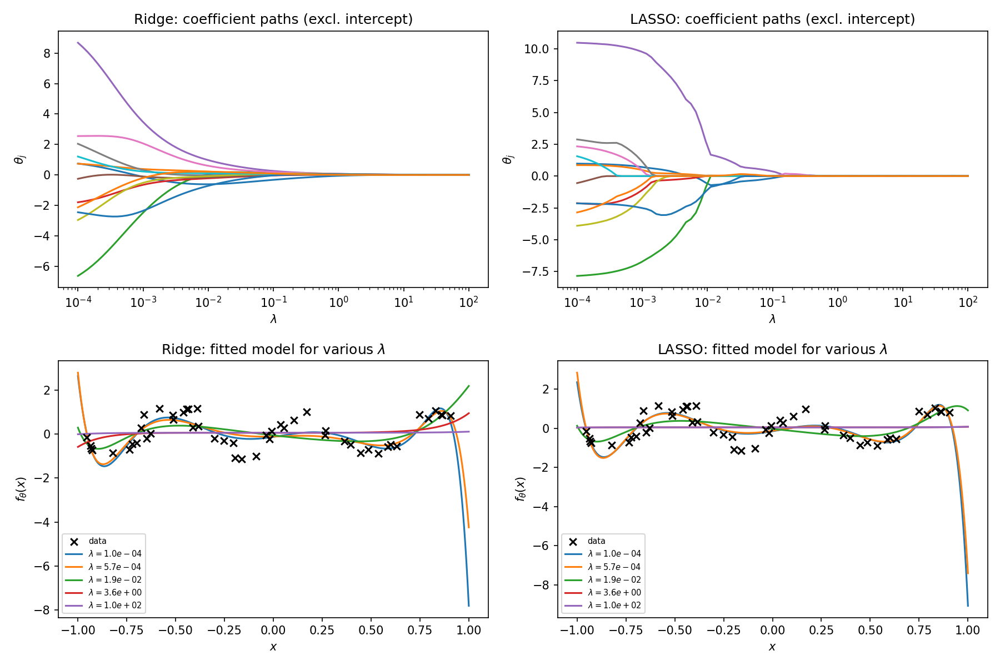
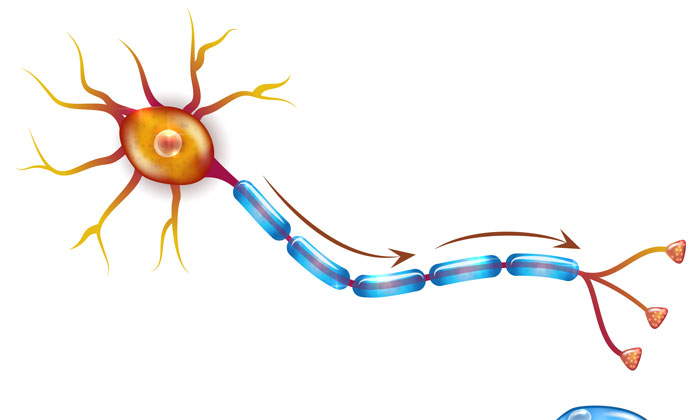
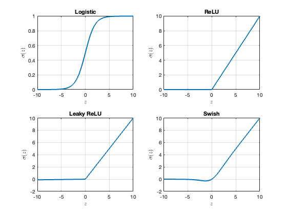
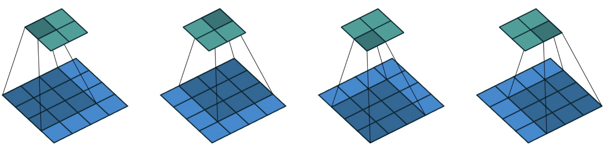
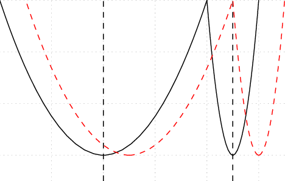
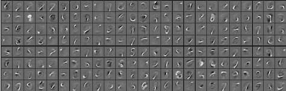

2 Machine Learning Models
This section takes a deep dive into the two main classes of machine learning model, the linear model 2.1 and neural networks 2.2
Along the way we will learn about the key (related) concepts of regularisation 2.2.3, featurisation 2.1.2, and dimensionality reduction 2.1.2.2.
TipRemark (Calculus notation)
Remark 2.1 (Calculus notation). For a suitably differentiable function f : \mathbb{R}^d \rightarrow \mathbb{R} we let (\nabla f)(\mathbf{x}) = \left[ \begin{array}{c} \partial_{x_1} f(\mathbf{x}) \\ \vdots \\ \partial_{x_d} f(\mathbf{x}) \end{array} \right] denote the gradient, and for a suitably differentiable function f : \mathbb{R}^d \rightarrow \mathbb{R}^d we let \nabla \cdot f = \partial_{x_1} f_1(\mathbf{x}) + \cdots + \partial_{x_d} f_d(\mathbf{x}) denote the divergence.
The Laplacian is denoted \Delta = \nabla \cdot \nabla.
On occasion it will be helpful to emphasise which variable a differential operator is acting on, and we will use subscript notation such as \nabla_{\mathbf{x}} to indicate action on the \mathbf{x} argument.
2.1 Linear Model
Although we already encountered examples of linear models in the regression context (cf. Example 1.12), here we precisely define it:
It is worth re-emphasising that this definition does not require the relationship between \mathbf{x} and f_{\bm{\theta}}(\mathbf{x}) to be linear as in Equation 1.1. The “linearity” refers to linearity of f_{\bm{\theta}}(\mathbf{x}) with respect to the parameters \bm{\theta} \in \mathbb{R}^p.
For the moment we will suppose we are provided with appropriate feature functions \phi_i : \mathcal{X} \rightarrow \mathbb{R}; the issue of selecting an appropriate featurisation is discussed in Section 2.1.2.
The vector-valued function \phi : \mathcal{X} \rightarrow \mathbb{R}^p whose coordinate functions are the \phi_i is called the feature map associated to the linear regression model.
To get started, we will generalise the calculations from Exercise 1.3 to an arbitrary linear model:
It is reassuring that least squares falls under the umbrella of empirical risk minimisation, but the value of having a general framework for supervised learning is that we can consider alternative loss functions as well.
One motivation for this is to consider the robustness of a linear model against outliers, or equivalently against an adversarial attack targeting one entry in the dataset.
In the case of the squared error loss, manipulating one data point y_i can affect the learned parameters \hat{\bm{\theta}} (and therefore also the predictions from the linear model) by an arbitrarily large amount.
This attack can be defeated by using the absolute deviation loss L(y,y') = |y - z| instead.
The situation is fairly transparent for a linear model, but for neural networks it can occur that an almost imperceptible change (e.g. changing a few pixels of an image) can cause a neural network into drastically change its output; this idea has been exploited to develop several ingenious adversarial attacks, which you can read more about on Wikipedia.
A trained machine learning model is said to be outlier robust if changing one datapoint y_i does not enable an arbitrarily large change to the predictions from that model.
2.1.1 Regularisation
So far the only way to train a machine learning model that we have seen is via minimising the empirical risk (cf. Section 1.2.1). Even maximum likelihood estimation turned out to just be a special case of minimising the empirical risk (cf. Section 1.2.2).
Is this it?
Well, no; the aim of this section is to understand when empirical risk minimisation can fail, and what we can do instead.
A classical statistics course might advise against using statistical models that are over-parametrised, and interpret Example 2.1 as a cautionary tale of the non-uniqueness of the maximum likelihood estimator when the model is over-parametrised.
However, over-parametrised models are in fact routinely used in modern machine learning. One important reason for this is that it is practically easier to find a “good” set of parameters \bm{\theta} when there are more degrees of freedom to play with; we will discuss optimisation in detail in Chapter 3.
Another important reason is that it can be “easier” to use a generic and very flexible machine learning model, as opposed to designing a bespoke model for a given task.
But how can we justify using over-parametrised models?
In particular, we know that over-fitting can occur when we try to train a flexible model by minimising the empirical risk (cf. Section 1.3).
A widely-used solution is called additive regularisation, and it involves a changing the optimisation objective used for training through the addition of an additive component:
Usually (but not always; see Example 2.4) the regulariser R(f) is a quantitative measure of the complexity of the function f; for example, the gradient (or first order Sobolev) regulariser R(f) = \int \|\nabla f(\mathbf{x})\|^2 \; \mathrm{d}\rho(\mathbf{x}) \tag{2.3} explicitly penalises functions f that differ from a constant in the high probability regions of a given probability distribution \rho on \mathcal{X} = \mathbb{R}^p.
In the case of a simple linear model f_{\bm{\theta}}(\mathbf{x}) = \theta_1 x_1 + \cdots + \theta_p x_p we have \nabla f_{\bm{\theta}}(\mathbf{x}) = \bm{\theta} and the Sobolev regulariser therefore can be equivalently written as R(\bm{\theta}) = \|\bm{\theta}\|^2. Notice that R(\bm{\theta}) is strictly convex; this property can sometimes be important:
Perhaps the most important example of a convex regulariser is R(\bm{\theta}) = \|\bm{\theta}\|^2, which we explore in detail in Section 2.1.1.1, but several other regularisers are also widely-used and we mention some of these in Section 2.1.1.2. Typically \lambda_n \rightarrow 0 as n \rightarrow \infty, since for large datasets the empirical risk \mathcal{R}_n usually contains sufficient information to uniquely resolve the best performing machine learning model (e.g. in Example 2.3 we have \lambda_n = \frac{1}{n}).
We already saw that maximum likelihood is a special case of empirical risk minimisation when the response \mathbf{Y} is conditionally independent given the covariate \mathbf{X}; recall Exercise 1.3 in Section 1.2.2.
It turns our that Bayesian inference (or, more precisely, the maximum a posteriori estimator) can be interpreted as regularised empirical risk minimisation in the same context:
Regularisation does not need to simply come from a generic convex function; domain knowledge can also be used to usefully constrain a machine learning model:
Other kinds of physical knowledge that could be exploited as a regulariser include conservation of energy (e.g. if analysing data from a closed physical system), or rotation invariance (e.g. if the perspective from which the data were collected is immaterial).
Unfortunately, it is not always the case that including expert knowledge as a regulariser is helpful. As a cautionary tale, in the early days of natural language processing it was assumed that linguistic and grammatical “rules” ought to be effective as regularisers for training a text-based machine learning model.
However, modern large language models (cf. Chapter 9) have largely abandoned this idea in favour of an entirely data-driven approach, which has proven to be more successful.
Oftentimes the benefit from regularisation can be unclear at the outset, but the performance of a regulariser can always be assessed post hoc using methods such as cross-validation discussed in Section 1.3.
2.1.1.1 Ridge Regression
The quadratic regulariser R(\bm{\theta}) = \|\bm{\theta}\|^2 is often a natural choice and appears also in mathematical applications of integral and differential equations, where it is known as Tikhonov regularisation:
The use of Tikhonov regularisation in the context of training a linear model is known as ridge regression:
So regularisation can resolve the issue of non-uniqueness of the empirical risk minimiser and can do so without increasing the difficulty of the computations that we are required to perform (at least in the case of Example 2.5).
It turns our that this issue can be addressed by careful selection of the parameter \lambda_n, which we recall controls the amount of regularisation that is applied.
To see this, consider the two limiting cases:
- As \lambda_n \rightarrow 0 the training objective becomes effectively just the empirical risk \mathcal{R}_n(\cdot); i.e. functions f that perform well on the training dataset are preferred.
- As \lambda_n \rightarrow \infty the training objective becomes effectively just the regulariser R(\cdot); i.e. simpler functions f are preferred.
Since varying \lambda_n spans a spectrum of models from most complex (\lambda_n \rightarrow 0) to least complex (\lambda_n \rightarrow \infty), a powerful strategy is to select \lambda_n based on cross-validation as described in Section 1.3.1.
See Figure 2.1 and Chapter 9.

On the other hand, a Bayesian would posit a prior distribution without reference to any \lambda_n; this might be sub-optimal in general (e.g. if the subjective belief encoded in the prior is incorrect or unhelpful) but at least asymptotically (in n) this approach can be valid:
2.1.1.2 Other Convex Regularisers
A generalisation of Tikhonov regularisation is obtained by replacing the Euclidean norm \|\cdot\| on \mathbb{R}^p with a norm \|\bm{\theta}\|_s = \left( \sum_{i=1}^p |\theta_i|^s \right)^{\frac{1}{s}} \tag{2.6} for some 1 \leq s \leq \infty.
Special cases include the sum norm \|\bm{\theta}\|_1 = \sum_{i=1}^p |\theta_i|, the Euclidean norm \|\bm{\theta}\|_2 and the maximum norm \|\bm{\theta}\|_\infty = \max \{ |\theta_i| : 1 \leq i \leq p\}, which each give rise to convex regularisers (Question 10).
For s < 1 does not define a valid norm, but in an unfortunate convention the notation \|\cdot\|_s is still commonly used. The special \|\bm{\theta}\|_0 is interpreted as the number of non-zero entries in \bm{\theta}.
Is this additional flexibility useful?
To motivate a positive answer, consider for a moment the computational challenges associated with a larger number of parameters p.
A call to the machine learning model f_{\bm{\theta}}(\cdot) incurs a computational complexity O(p) and this could be large; for example, modern neural networks can have billions of parameters, so that p \approx 10^9 (cf. Section 2.2). Reducing the cost of calls to f_{\bm{\theta}}(\cdot) is an important computational challenge in machine learning, and there are two main ways this is achieved.
The first of these is quantisation, meaning that the elements of \bm{\theta} are stored in lower precision for faster computation.
For reference, GPU computation is typically performed in 32-bit single precision (roughly, 8 decimal places) while CPU computation is typically double precision (roughly 16 decimal places).
In modern machine learning, the elements of \bm{\theta} are typically stored in 16-bit half precision during training, and then further quantised into 8-bits for future calls to the model.
The second solution is called sparsity; this means deliberately setting many of the elements of \bm{\theta} to exactly 0, so that computation involving these parameters can be completely ignored.
Sparsity is particularly simple to operationalise in the context of the linear model, as we shall see next:
TipRemark (Geometry of the LASSO )
Remark 2.2 (Geometry of the LASSO ). This remark is intended only for students who have taken MSP3809.
To understand why the LASSO sets entries of \bm{\theta} exactly to 0, we can interpret Equation 2.7 as a Lagrangian for the constrained problem \argmin_{\bm{\theta} \in \mathbb{R}^p} \quad \frac{1}{n} \| \mathbf{y} - \bm{\Phi} \bm{\theta} \|^2 \quad \mathrm{s.t.} \quad \|\bm{\theta}\|_1 \leq t_n \tag{2.8} where \lambda_n \geq 0 plays the role of a Lagrange multiplier to enforce the constraint \|\bm{\theta}\|_1 - t \leq 0.
(By convex duality, for each t_n there exists a \lambda_n, and vice versa, such that Equation 2.7 and Equation 2.8 have the same solution.)
The contours of the objective \frac{1}{n} \| \mathbf{y} - \bm{\Phi} \bm{\theta} \|^2 are elliptical, while the constraint region \|\bm{\theta}\|_1 \leq t_n has the form of a diamond, meaning that the typical point of intersection is a corner of the diamond; see Figure 2.2
This in turn corresponds to sparsity in the entries of \bm{\theta}.
Beyond just reducing the computational burden of evaluating f_{\bm{\theta}}(\cdot), sparsity can also help to promote interpretability of the trained machine learning model. Indeed, the non-zero entries of \bm{\theta} determine which of the entries of \mathbf{X} are considered to be most relevant in predicting the response Y.
2.1.2 Features
Given covariates \mathbf{x} we want to understand what features \phi_i(\mathbf{x}) to include in our model.
For example, if we are using a linear model we would want to select features such that f_{\bm{\theta}}(\mathbf{x}) = \theta_1 \phi_1(\mathbf{x}) + \dots + \theta_p \phi_p(\mathbf{x}) performs well at the machine learning task.
In this context, a feature is any measurable property or characteristic of \mathbf{x} that may be relevant to the task at hand.
Feature space is a p-dimensional space where each dimension corresponds to a specific feature \phi_i. A datum \mathbf{x} is represented in feature space as a vector \bm{\phi}(\mathbf{x}) = [\phi_1(\mathbf{x}) , \dots , \phi_p(\mathbf{x})], so we can consider the feature space1 to be a subset of \mathbb{R}^p.
The position of \bm{\phi}(\mathbf{x}) in feature space is determined by the values of its features \phi_i(\mathbf{x}), and this representation can help to understand the relationships between different data points \mathbf{x} \in \mathcal{X}.
Some features can be more useful than others for a given task; e.g. the price of a sandwich is usually more relevant to the task of choosing a sandwich for lunch compared to the colour of the packaging.
Designing an appropriate feature space (a.k.a. featurisation) is a crucial step in solving a machine learning task: For example, in classification we would hope that our features enable data from different classes to be clearly separated.
Or, in clustering (cf. Section 6.1) we would hope that similar data points tend to group together in feature space, allowing for identification of natural groupings within the dataset.
Due to the importance of featurisation we will discuss three different strategies:
2.1.2.1 Variable Selection
The simplest approach to featurisation in the case where \mathbf{x} is a vector input is to use the coordinates of \mathbf{x} itself as features, i.e. \phi_i(\mathbf{x}) = x_i. Depending on the context this may or may not be a good idea; for example, if we are trying to predict tomorrow’s stock price y_{t+1} from historical price data x_t, x_{t-1}, \dots then data from the distant past are unlikely to be relevant. In such situations, variable selection can be useful. This is a simple idea; use features corresponding to a subset of the coordinates of \mathbf{x}; i.e. \phi_j(\mathbf{x}) = x_{i_j} for some relevant variables indexed by i_1 , \dots , i_p \in \{1,\dots,p\}. For the stock price example, we may for example select only the T most recent data x_t , \dots , x_{t-T+1} to be the features in our machine learning model. This is an example of a priori featurisation; we are using our prior knowledge of stock prices to select a featurisation that we hope will be appropriate for the machine learning task.
For many machine learning tasks it is far from clear what features may be useful. Think about this; could you write down an explicit function of the pixel values of an RGB image which would be informative for the purpose of classifying washing machines from dishwashers? Probably not!
In such settings it is desirable to use the data themselves to determine an appropriate featurisation for the given task.
In fact, we have already seen an example of data-driven variable selection in the form of the LASSO 2.7.
Let’s look at one more data-driven approach to variable selection, which is simple to implement:
Our main motivation for discussing variable selection is to set up a contrast with the next set of featurisation methods. Indeed, while variable selection methods are widely used in statistical applications where the individual covariates x_i are interpretable or carry special scientific interest (a setting that machine learners refer to as tabular data), for most machine learning tasks it is unlikely that a good featurisation is axis-aligned.
Rather, we will need to seek features that are either linear combinations \phi_i(\mathbf{x}) = a_{i,1} x_1 + \dots + a_{i,d} x_d of covariates (cf. dimensionality reduction 2.1.2.2), or possibly even nonlinear functions \phi_i(\mathbf{x}) of covariates (cf. kernel methods 2.1.2.3 and neural networks 2.2) if we want to unlock the full power of modern machine learning.
2.1.2.2 Dimensionality Reduction
In a literal sense, dimensionality reduction refers to taking a possibly high-dimensional input \mathbf{x} \in \mathbb{R}^d and reducing it to a lower-dimensional feature vector \bm{\phi}(\mathbf{x}) = [\phi_1(\mathbf{x}),\dots,\phi_p(\mathbf{x})] \in \mathbb{R}^p with p < d. This can be helpful if the dimension of \mathbf{x} is high; for example if \mathbf{x} is a typical 12 megapixel RGB image taken on your phone camera then the dimension d of \mathbf{x} is 36 \times 10^6. For the purpose of this section we will focus on linear dimensionality reduction, where each feature \phi_i(\mathbf{x}) = a_{i,1} x_1 + \dots + a_{i,d} x_d is formed as a linear combination of the entries of \mathbf{x} \in \mathbb{R}^d. Using matrix notation, we can express the task of linear dimensionality reduction as the task of choosing a matrix \mathbf{A} \in \mathbb{R}^{p \times d} such that the feature map \bm{\phi}(\mathbf{x}) = \mathbf{A} \mathbf{x} \tag{2.9} is appropriate for the given machine learning task.
Since the scale of \mathbf{A} is arbitrary, we impose a constraint that each row of \mathbf{A} has unit norm; \|\mathbf{a}_i\| = 1 where \mathbf{a}_i = [a_{i,1},\dots,a_{i,d}]^\top \in \mathbb{R}^d.
The most popular linear dimensionality reduction technique is called principal component analysis. To keep the presentation simple we will focus on the problem of finding a single linear feature \phi_1; that is, we seek the coefficients \mathbf{a}_1 = [a_{1,1},\dots,a_{1,d}]^\top \in \mathbb{R}^d. The main idea in principal component analysis is to select \mathbf{a}_1 such that \mathrm{Var}(\phi_1(\mathbf{X})) is maximised.
Intuitively, if \mathrm{Var}(\phi_1(\mathbf{X})) is large then \phi_1(\mathbf{X}) “captures as much as possible of the variability of \mathbf{X}”.
This is a heuristic; in a supervised learning setting the response data could be used to more directly determine the relevant “directions” \mathbf{a}_1, but one of the appealing features of principal component analysis (as we are about to see) is that it is quick an straightforward to implement.
Since the population distribution of \mathbf{X} is not known in geneal, we must estimate \mathrm{Var}(\phi_1(\mathbf{X})) from our dataset.
For simplicity we assume that the covariates are centred so that \sum_j x_{i,j} = 0 for each i.
Let \begin{align*} \mathbf{D} = \left[ \begin{array}{ccc} x_{1,1} & \dots & x_{1,d} \\ \vdots & & \vdots \\ x_{n,1} & \dots & x_{n,d} \end{array} \right] \end{align*} so that the sample variance2 of \{ \phi_1(\mathbf{x}_i) \}_{i=1}^n is \begin{align*} \frac{1}{n} \sum_{i=1}^n \phi_1(\mathbf{x}_i)^2 = \frac{1}{n} \sum_{i=1}^n (\mathbf{D} \mathbf{a}_1)^\top (\mathbf{D} \mathbf{a}_1) = \frac{1}{n} \sum_{i=1}^n \mathbf{a}_1^\top \mathbf{D}^\top \mathbf{D} \mathbf{a}_1 = \mathbf{a}_1^\top \mathbf{S}_n \mathbf{a}_1 , \qquad \mathbf{S}_n = \frac{1}{n} \mathbf{D}^\top \mathbf{D} . \end{align*}
Thus, we seek to maximise \mathbf{a}_1^\top \mathbf{S}_n \mathbf{a}_1 subject to \|\mathbf{a}_1\| = 1.
Constrained optimisation problems of this kind can be solved using Lagrange multipliers; since MSP3809 is not a prerequisite, the following proof is presented only for completeness and will not be examined:
NoteProof (Not Examinable)
Proof 2.1 (Not Examinable). To solve this we can use Lagrange multipliers; i.e. form the Lagrangian \begin{align*} \mathcal{L}(\mathbf{a}_1,\lambda_1) = \mathbf{a}_1^\top \mathbf{S}_n \mathbf{a}_1 - \lambda_1(\mathbf{a}_1^\top \mathbf{a}_1 - 1) \end{align*} and solve for the stationary point (\mathbf{a}_1,\lambda_1) defined by the simultaneous equations \nabla_{\mathbf{a}_1} \mathcal{L}(\mathbf{a}_1,\lambda_1) = \mathbf{0} and \nabla_{\lambda_1} \mathcal{L}(\mathbf{a}_1,\lambda_1) = 0.
This leads to \mathbf{S}_n \mathbf{a}_1 = \lambda_1 \mathbf{a}_1 and \|\mathbf{a}_1\| = 1, and we deduce that the solution \mathbf{a}_1 is the normalised principal eigenvector of \mathbf{S}_n and the Lagrange multiplier \lambda_1 is the associated eigenvalue.
Hence, maximising the variance subject to the constraint \|\mathbf{a}_1\| = 1 leads to determining the eigenvector associated with the largest eigenvalue.
The vector \mathbf{a}_1 is called the first principal component (Figure 2.3; left panel).
The second principal component corresponds to the (normalised) eigenvector \mathbf{a}_2 associated to the second largest eigenvalue \lambda_2, and by properties of eigenvectors this will be orthogonal to the first principal component. Subsequent principal components are similarly defined. This amounts to an eigendecomposition of the sample covariance matrix \mathbf{S}_n: \begin{align*} \mathbf{S}_n = \sum_{i=1}^d \lambda_i \mathbf{a}_i \mathbf{a}_i^\top \end{align*} Since the sample covariance matrix \mathbf{S}_n converges to the population covariance matrix \mathrm{Var}(\mathbf{X}), it follows (informally) that the principal components \{\mathbf{a}_i\}_{i=1}^d should converge to the (normalised) eigenvectors of the population covariance matrix \mathrm{Var}(\mathbf{X}) in the n \rightarrow \infty limit.
Having calculated principal components, we can now visualise our data \{\mathbf{x}_i\}_{i=1}^n in feature space by applying the feature map Equation 2.9 (Figure 2.3, right panel). The variance explained by the jth principal component is defined as \begin{align*} \frac{\lambda_j}{\sum_{i=1}^d \lambda_i} \end{align*} and the total variance explained by taking the first p principal components is \begin{align*} \frac{\sum_{j=1}^p \lambda_j}{\sum_{i=1}^d \lambda_i} . \end{align*} Intuitively, if most of the variability in \mathbf{X} is retained in the featurised version \bm{\phi}(\mathbf{X}), then we say that most of the variance is “explained”.
Principal component analysis is based on linear features, but oftentimes nonlinear features are more informative for a given machine learning task. Nonlinear methods for dimensionality reduction is an interesting topic beyond the scope of this module; an example of one such method is shown in Figure 6.2.
2.1.2.3 Kernel Methods
Variable selection and dimensionality reduction are useful tools to control the size of feature space when data are limited. On the other hand, given a sufficiently rich training dataset, we may want to include a large number of features in a linear model. Taking this idea to its logical conclusion, we want to make sense of expressions like f_{\bm{\theta}}(\mathbf{x}) = \theta_1 \phi_1(\mathbf{x}) + \theta_2 \phi_2(\mathbf{x}) + \dots where for this to make sense we require the infinite series to be (absolutely) convergent. Surprisingly, this is actually possible, as we will see by carefully examining empirical risk minimisation for the linear model 2.1.
Suppose we wish to apply a linear model to a new input \mathbf{x}_\star. For a linear model trained via empirical risk minimisation on the squared error loss, the resulting output is f_{\hat{\bm{\theta}}}(\mathbf{x}_\star) = \bm{\phi}(\mathbf{x}_\star)^\top \hat{\bm{\theta}} = \bm{\phi}(\mathbf{x}_\star)^\top (\bm{\Phi}^\top \bm{\Phi})^{-1} \bm{\Phi}^\top \mathbf{y} = \bm{\phi}(\mathbf{x}_\star)^\top \bm{\Phi}^\top (\bm{\Phi} \bm{\Phi}^\top)^{-1} \mathbf{y} where the empirical risk minimising parameter \hat{\bm{\theta}} is Equation 2.1 and where we have used \begin{align} & \bm{\Phi}^\top = \bm{\Phi}^\top (\bm{\Phi} \bm{\Phi}^\top) (\bm{\Phi} \bm{\Phi}^\top)^{-1} \nonumber \\ & \implies (\bm{\Phi}^\top \bm{\Phi})^{-1} \bm{\Phi}^\top = \bm{\Phi}^\top (\bm{\Phi} \bm{\Phi}^\top)^{-1} . \end{align} \tag{2.10} Note that the features \phi_i enter only via the matrix product \bm{\Phi} \bm{\Phi}^\top, i.e. depending only on the inner product [\bm{\Phi} \bm{\Phi}^\top]_{i,j} = \sum_l \phi_l(\mathbf{x}_i) \phi_l(\mathbf{x}_j) = \langle \bm{\phi}(\mathbf{x}_i) , \bm{\phi}(\mathbf{x}_j) \rangle \tag{2.11} in the feature space 2.4.
The inner product \langle \bm{\phi}(\mathbf{x}) , \bm{\phi}(\mathbf{x}') \rangle measures how “aligned” or “similar” the inputs \mathbf{x} and \mathbf{x}' are, according to the linear model.
Crucially, if we can “calculate this inner product directly” we may not need to enumerate the features \phi_i at all. In particular, we can make sense of Equation 2.11 even if the number of features is infinite, as long as the infinite series is (absolutely) convergent!
To make this concrete, let k : \mathcal{X} \times \mathcal{X} \rightarrow \mathbb{R} be defined as k(\mathbf{x},\mathbf{x}') = \langle \bm{\phi}(\mathbf{x}) , \bm{\phi}(\mathbf{x}') \rangle. Also let [\mathbf{K}]_{i,j} = k(\mathbf{x}_i , \mathbf{x}_j) and [\mathbf{k}(\mathbf{x})]_i = k(\mathbf{x} , \mathbf{x}_i).
In this new notation f_{\hat{\bm{\theta}}}(\mathbf{x}_\star) = \mathbf{k}(\mathbf{x}_\star) \mathbf{K}^{-1} \mathbf{y} \tag{2.12} which makes clear that predictions f_{\hat{\bm{\theta}}}(\mathbf{x}_\star) from the model can be computed if we can in turn compute with k, the feature space inner product3.
Can we do this without explicitly enumerating the features \phi_i?
Surprisingly, the answer is sometimes “yes”:
This is all very well, but what does it mean to compute Equation 2.12 when the number of features is larger than the size of the training dataset?
In the case of the Gaussian kernel 2.3 we would be attempting to fit the linear model f_{\bm{\theta}}(x) = \sum_{l=0}^\infty \theta_l \sqrt{ \frac{(2 \alpha )^l}{l!} } x^l \exp( - \alpha x^2 ) , which has an infinite number of parameters \bm{\theta} = (\theta_l)_{l=0}^\infty, to a finite training dataset.
From Section 2.1.1, we already know about the dangers of over-fitting and the need for regularisation in this context. Indeed, we can generally expect to exactly interpolate the training dataset when we have infinitely many degrees of freedom in our model.
Tikhonov regularisation 2.3 provides an answer; indeed, consider the regularised objective \argmin_{\bm{\theta} \in \mathbb{R}^\infty } \quad \mathcal{R}_n(f_{\bm{\theta}}) + \lambda_n \|\bm{\theta}\|^2 \tag{2.13} where we interpret \|\bm{\theta}\|^2 as \sum_l \theta_l^2 whenever this series is convergent. Since this is an over-parametrised model, there exists an (infinite dimensional) subspace \Theta_{\min} of parameters for which \mathcal{R}_n(f_{\bm{\theta}}) = 0 for all \bm{\theta} \in \Theta_{\min} (cf. Example 2.2).
For n > p the solution to Equation 2.13 is given by ridge regression 2.5, but now we are interested in the case where p = \infty and n < \infty, so let’s compute the solution to Equation 2.13 in that context.
That is, we wish to solve \argmin_{\bm{\theta}} \quad \|\bm{\theta}\|^2 \quad \text{s.t.} \quad \mathcal{R}_n(f_{\bm{\theta}}) = 0. \tag{2.14} To do so we can construct the Lagrangian \begin{align*} \mathcal{L}(\bm{\theta},\lambda) = \|\bm{\theta}\|^2 + \lambda \mathcal{R}_n(f_{\bm{\theta}}) = \|\bm{\theta}\|^2 + \frac{\lambda}{n} \| \mathbf{y} - \bm{\Phi} \bm{\theta} \|^2 \end{align*} and solve the stationary point equations \nabla_{\bm{\theta}} \mathcal{L}(\bm{\theta},\lambda) = \mathbf{0} and \nabla_\lambda \mathcal{L}(\bm{\theta},\lambda) = 0. The first equation is \begin{align*} \nabla_{\bm{\theta}} \mathcal{L} & = 2 \bm{\theta} + \frac{\lambda}{n} \left(-2 \bm{\Phi}^\top \mathbf{y} + 2 \bm{\Phi}^\top \bm{\Phi} \bm{\theta} \right) = \mathbf{0} \\ & \implies \quad \bm{\theta} = \frac{\lambda}{n} \left(\mathbf{I} + \frac{\lambda}{n} \bm{\Phi}^\top \bm{\Phi} \right)^{-1} \bm{\Phi}^\top \mathbf{y} = \left( \frac{n}{\lambda} \mathbf{I} + \bm{\Phi}^\top \bm{\Phi} \right)^{-1} \bm{\Phi}^\top \mathbf{y} \end{align*} while the second equation is satisfied when \lambda \rightarrow \infty, since in this limit \bm{\theta} = (\bm{\Phi}^\top \bm{\Phi})^{-1} \bm{\Phi}^\top \mathbf{y} and4 from Equation 2.10, \begin{align*} \mathbf{y} - \bm{\Phi} \bm{\theta} & = \mathbf{y} - \bm{\Phi} ( \bm{\Phi}^\top \bm{\Phi} )^{-1} \bm{\Phi}^\top \mathbf{y} \\ & = \mathbf{y} - \bm{\Phi} \bm{\Phi}^\top (\bm{\Phi} \bm{\Phi}^\top)^{-1} \mathbf{y} = \mathbf{0} . \end{align*} Thus we have shown that the solution to Equation 2.14 is \begin{align*} \hat{\bm{\theta}} & = (\bm{\Phi}^\top \bm{\Phi})^{-1} \bm{\Phi}^\top \mathbf{y} = \bm{\Phi}^\top (\bm{\Phi} \bm{\Phi})^\top \mathbf{y} \end{align*} and predictions based on the associated linear model \begin{align*} f_{\hat{\bm{\theta}}}(\mathbf{x}_\star) = \bm{\phi}(\mathbf{x}_\star) \hat{\bm{\theta}} = \bm{\phi}(\mathbf{x}_\star) \bm{\Phi}^\top (\bm{\Phi} \bm{\Phi})^\top \mathbf{y} = \mathbf{k}(\mathbf{x}_\star) \mathbf{K}^{-1} \mathbf{y} \end{align*} are exactly the predictions Equation 2.12 when we express each term using the k notation previously described.
Thus we can consider Equation 2.12 to be the natural generalisation of ridge regression to the setting where the number of features p is (possibly much) larger than the size n of the training dataset. For self-explanatory reasons, Equation 2.12 is commonly called a minimal norm interpolant.
Now that we have seen how to make sense of linear models with a large or infinite number of features, it is natural to ask whether there are any examples beside Exercise 2.3 where the feature map inner produce can be directly computed. While the Gaussian kernel is unusual in admitting an explicit feature map, there are plenty of examples where we can directly compute an implicitly defined feature map inner product.
This is essentially the concept of a kernel:
This second property of a kernel is closely related to the concept from linear algebra:
A matrix \mathbf{K} \in \mathbb{R}^{n \times n} is said to be positive semi-definite if \mathbf{w}^\top \mathbf{K} \mathbf{w} \geq 0 for all \mathbf{w} \in \mathbb{R}^n, and we write \mathbf{K} \succeq 0. If the inequality is strict for all \mathbf{w} \neq \mathbf{0}, we say that the matrix \mathbf{K} is strictly positive definite and write \mathbf{K} \succ 0.
Thus the second property in Definition 2.5 states that all matrices \mathbf{K} of the form [\mathbf{K}]_{i,j} = k(\mathbf{x}_i, \mathbf{x}_j) are positive semi-definite for all choices of \mathbf{x}_1,\dots,\mathbf{x}_n \in \mathcal{X} and n \in \mathbb{N}.
The next example shows that a feature map inner product is a kernel. For simplicity we suppose the feature space is finite-dimensional but the argument can be generalised:
There are many known examples of kernels, for instance the inverse multi-quadric kernel k(\mathbf{x} , \mathbf{x}') = (\sigma^2 + \|\mathbf{x} - \mathbf{x}'\|^2)^{-1} and the Matérn-\frac{1}{2} kernel k(\mathbf{x},\mathbf{x}') = \exp(-\|\mathbf{x} - \mathbf{x}'\|_1); many more examples can be found in Berlinet and Thomas-Agnan (2011).
So, although we do not know exactly what the feature space looks like for the inverse multi-quadric kernel (for example), we do know that it exists and we can compute its feature space inner product.
The moral here is that it is possible to create rich feature spaces and yet retain tractable computation by using an appropriate kernel.
Kernel methods form a rich topic in machine learning, with textbook treatments including Berlinet and Thomas-Agnan (2011) and Paulsen and Raghupathi (2016).
Regression and classification are two examples of machine learning tasks where kernel methods are successfully used. These methods work because the intrinsic structure of the data can often be more easily understood in high-dimensional feature spaces; see Figure 2.4
However, unlike in variable selection 2.1.2.1 and dimensionality reduction 2.1.2.2, the feature space associated to a kernel is fully determined by the kernel, not learned from the dataset.
This is probably the biggest limitation of kernel methods; considerable insight is needed to select a kernel that is appropriate for the task at hand.
The usual solution is kernel learning; selecting a parametric family of kernels \{k_{\bm{\psi}}\}_{\bm{\psi} \in \Psi} and then learning \bm{\psi} \in \Psi from the training dataset. Yet specifying a parametric family of kernels \{k_{\bm{\psi}}\}_{\bm{\psi} \in \Psi} can still be difficult, and in these cases neural networks offer an attractive alternative to kernel methods by enabling automatic data-driven featurisation, as we will explore next.
2.2 Neural Networks
Recall that we first met neural networks in Example 1.15.
Roughly speaking, a neural network is a parametric machine learning model for which the mapping from \mathbf{x} to f_{\bm{\theta}}(\mathbf{x}) can be highly complicated and nonlinear, depending on factors such as the number of layers, the number of connections, and the type of activation functions that are used.
In this section we are going to take a closer look at neural networks, focusing first on activation functions 2.2.1, then turning to architectures 2.2.2 (meaning the structure defined by the nodes and connections of the network).
2.2.1 Activation Functions
Neural networks were originally proposed as a mathematical model for how the human brain might process information; each node in the network was interpreted as a neuron (a nerve cell that transmits information through electrical signals; Figure 2.5).
In biology a neuron “fires” when the total electrical stimulation from other neurons reaches a specific threshold, causing a rapid change in the neuron’s electrical charge. If the threshold is met, the neuron fires at full strength, sending a signal that can cause the next neuron to fire, allowing for communication throughout the nervous system.

This “firing” behaviour can be captured using a simple activation function \sigma(z) = \left\{ \begin{array}{ll} 1 & \text{if } z \geq 1 \\ 0 & \text{if } z < 1 \end{array} \right. . \tag{2.16} Even such a simple rule (“fire if the input is > 1”) is enough to perform logical deductive reasoning. For example, suppose our inputs are \mathbf{x} \in \{0,1\}^2, and we wish for a neuron to fire if either x_1 = 1 or x_2 = 1. This desired behaviour is called an OR gate and we can express this functionality in a truth table:
| x_1 | x_2 | \mathrm{OR}(x_1,x_2) |
|---|---|---|
| 0 | 0 | 0 |
| 1 | 0 | 1 |
| 0 | 1 | 1 |
| 1 | 1 | 1 |
A simple neural network that implements the OR gate is as follows: \mathbf{x} \mapsto \sigma ( x_1 + x_2 ) Recalling that neural networks allow also for weighted combinations of inputs, we can construct other logic gates, such as \mathbf{x} \mapsto \sigma\left( \frac{x_1}{2} + \frac{x_2}{2} \right) \tag{2.17} which implements the AND gate:
| x_1 | x_2 | \mathrm{AND}(x_1,x_2) |
|---|---|---|
| 0 | 0 | 0 |
| 1 | 0 | 0 |
| 0 | 1 | 0 |
| 1 | 1 | 1 |
Chaining together neurons into a neural network can enable more complicated logical deductions to be performed. For example, consider the XOR gate (the “X” stands for “eXclusive”, meaning that we exclude the combination x_1 = x_2 = 1 from the set of activating inputs):
| x_1 | x_2 | \mathrm{XOR}(x_1,x_2) |
|---|---|---|
| 0 | 0 | 0 |
| 1 | 0 | 1 |
| 0 | 1 | 1 |
| 1 | 1 | 0 |
It is not possible to construct a XOR gate with a single neuron, but we can do so with a neural network. For example, the L = 3 layer neural network \begin{align*} \mathbf{x} \mapsto \sigma\left( 1 - \frac{1}{2} \sigma\left( \frac{x_1}{2} + \frac{x_2}{2} \right) - \frac{1}{2} \sigma\left(1 - \frac{x_1}{2} - \frac{x_2}{2} \right) \right) \end{align*} implements XOR.
Notice that XOR logic is only possible because the activation function Equation 2.16 is nonlinear; this is a key distinguishing property of neural networks compared to the linear model. Indeed, a neural network with a linear activation function would just be a linear model!
Such binary (or Boolean) logic is a convenient way for us to understand the reasoning capabilities of neural networks, but it is not well-suited to most machine learning tasks. This is due to two main factors:
- First, the input data \mathbf{x} are not binary in general; for example \mathbf{x} could be a vector of real-valued covariates in a regression or classification task, or grayscale pixel values in an image input.
- Second, the “on or off” nature of the simple activation function Equation 2.16 introduces discontinuities; if we perturbed the coefficients in Equation 2.17 by even a very small amount, e.g. replacing \frac{1}{2} by \frac{1}{2} - \epsilon for 0 < \epsilon \ll 1, then we would no longer have an AND gate. This poses a barrier to gradient-based training; we will discuss training further in Section 2.2.3.2.
As a result, the activation functions \sigma(\cdot) that are most commonly used in machine learning applications are continuous functions, meaning that the output of a neural network is a continuous function of the input (since the composition of continuous functions is again a continuous function).
In fact, we have already met one example of a continuous activation function, the logistic activation function in Equation 1.3 \sigma(z) = \frac{1}{1 + e^{-z}} The logistic function maps the input z continuously into (0,1). This property is particularly useful for binary classification problems, such as Example 1.13.
However, the gradient \sigma'(z) vanishes as |z| \rightarrow \infty, which can cause problems during gradient-based training because the empirical risk \mathcal{R}_n(f_{\bm{\theta}}) can become almost constant in distant regions of the parameter space \Theta (cf. Section 2.2.3.2).
To achieve both nonlinearity and non-vanishing gradient, the rectified linear unit (ReLU) activation function is commonly used: \sigma(z) = \max(0, z) The ReLU activation function addresses the vanishing gradient problem by allowing positive values of z to pass through unchanged, while negative values are set to 0.
However, it can suffer from the dying ReLU problem, where for a poor choice of the weights and bias parameters the neuron permanently outputs 0, which is wasteful.
Several alternatives have been proposed which carry the benefits of nonlinearity and non-vanishing gradient while also avoiding the dying ReLU problem. One is the softplus, which we saw in Equation 1.4. Another, the leaky ReLU \sigma(z) = \left\{ \begin{array}{ll} z & \text{if } z > 0 \\ \alpha z & \text{if } z \leq 0 \end{array} \right. for some 0 < \alpha \ll 1.
This variant of ReLU allows a small, non-zero, constant gradient (\alpha) when the input is negative, helping to keep the neurons active, mitigating the dying ReLU problem to some extent. As another example, the swish activation function \sigma(z) = \frac{z}{1 + e^{-z}} was developed by researchers at Google. This activation function is different to the other examples we have seen because it is non-monotonic; empirically this appears to be a beneficial property in certain tasks.
These activation functions are illustrated in Figure 2.6.

Choosing the right activation function is more of an art than a science, and can be an important factor in determining the performance of a neural network.
The choice usually depends on the specific task being solved, and empirical guidance from small prototyping experiments is often useful.
2.2.2 Network Architectures
The other important aspect to designing a neural network is the architecture, meaning the structure defined by the nodes and connections of the network. In Example 1.15 we saw an example of the most standard neural network architecture, the fully-connected feed-forward neural network. However, just as the choice of activation function should be task-specific, the neural network architecture should also be optimised for the given task.
Our understanding of neural networks has advanced significantly over recent decades, and there is substantial guidance on which architectures tend to perform well for specific machine learning tasks. For example, tasks involving images often employ a convolutional architecture in combination with fully-connected feed-forward layers, as in Figure 2.7.
This deep convolutional neural network can be understood as the combination of two qualitatively different smaller neural networks, chained together like “building blocks” to construct a larger, more expressive neural network. In the remainder we will take a brief look at some of the most common building blocks.
A feedforward neural network is the simplest type of neural network wherein connections between the nodes do not form a cycle. For a simple one-layer network, the output can be computed as: \sigma(\mathbf{W} \mathbf{x} + \mathbf{b}) \tag{2.18} where \mathbf{x} is the input vector, \mathbf{W} is a (dense) weight matrix, \mathbf{b} is the bias vector, and \sigma is the activation function (cf. Figure 1.5).
A convolutional neural network (often abbreviated to CNN) is a common choice for image processing, video analysis, and other tasks where spatial hierarchies are advantageous. They use convolutional layers that apply filters to input data, as illustrated in Figure 2.8. The mathematical formula is identical to Equation 2.18 but now the weight matrix \mathbf{W} is sparse; the output of each cell in the convolutional layer depends only on a small number of neighbouring pixels from the input.

Figure 2.8: Illustrating a convolutional layer. The input image (blue) is shown on the lower row, while the output (turquoise) is shown on the upper row. The result is a coarser version of the original image, to which a nonlinear activation is then (coordinatewise) applied. [source] To avoid numerical instability when constructing deep neural networks, a common trick is to use a normalisation layer (interpreted coordinatewise) \mathbf{x} \mapsto \frac{ \mathbf{x} - \mu }{ \sqrt{\sigma^2 + \epsilon} } where \mu is the mean of the entries in \mathbf{x}, \sigma^2 is the variance of the entries in \mathbf{x}, and 0 < \epsilon \ll 1 is a small positive constant to avoid division by 0.
For text data a tokeniser layer takes a finite passage of text \mathbf{x} as input and converts it into a finite string of integers, each integer encoding a small sequence of characters called a token that appeared in the text. A simple example of tokenisation is word tokenisation, i.e.
This product is amazing , but the delivery was late . 325 5362 72 57321 131 21325 341 89124 137 537 17 The set of all tokens is called the vocabulary of the tokenizer, and the number d of tokens in the vocabulary is called the size of the vocabulary.
An embedding layer takes as input a string of tokens (i.e. integers) and outputs (or embeds) this string into a Euclidean space \mathbb{R}^{d'} with d' \ll d. This is achieved by turning each token (i.e. integer m) into its associated one hot vector \mathbf{e}_m = (0 , \dots , 0 , \underbrace{1}_{\text{$m$th coordinate}} , 0 , \dots , 0)^\top and applying a low-rank projection to obtain \bar{\mathbf{e}}_m = \mathbf{P} \mathbf{e}_m where \mathbf{P} is a projection matrix of size \mathbb{R}^{d' \times d}. The embedding vectors \bar{\mathbf{e}}_m are recorded along with the position that these tokens occurred in the original text.
A self-attention head is designed to weigh the importance of different tokens in a sequence relative to others. A simple example of self-attention is reading a sentence where your brain focuses on the most important words to understand the meaning. For instance, when reading the sentence, she is eating a green apple, your attention focuses on eating to predict a food word will follow, and on apple to understand the object being eaten. This idea can be replicated using neural networks by computing attention scores, enabling the model to focus on specific parts of the input when making predictions. The attention score for a token whose embedding is \bar{\mathbf{e}} is calculated as \mathrm{softmax}\left(\frac{\bar{\mathbf{e}} \bar{\mathbf{e}}^\top }{\sqrt{d'}}\right) \bar{\mathbf{e}} \tag{2.19} where \bar{\mathbf{e}} has dimension d'. Here [\mathrm{softmax}(\mathbf{v})]_i = e^{v_i} / \sum_j e^{v_j} is the softmax function, which is applied row-wise to the matrix \bar{\mathbf{e}} \bar{\mathbf{e}}^\top in Equation 2.19. The jth component of Equation 2.19 is interpreted as “how much attention” should be paid to the jth coordinate in the embedding space when one is interested in tokens relevant to \bar{\mathbf{e}}.
An unembedding layer is an approximate inverse of the embedding layer; this is necessarily approximate when the dimension d' of the embedding is lower than the size of the vocabulary d. Given an embedded vector \bar{\mathbf{e}}, an unembedding layer returns \boldsymbol{\sigma} = \sigma(\mathbf{W} \bar{\mathbf{e}} + \mathbf{b}) where \mathbf{W} is a d \times d' weight matrix and \sigma is an activation function mapping into (0,1), such as Equation 1.3. The mth entry \sigma_m in the output vector \boldsymbol{\sigma} is interpreted as being proportional to the probability that token m gave rise to the embedding \bar{\mathbf{e}}.
The transformer, introduced in Vaswani et al. (2017), revolutionised the field of natural language processing (the now famous acronym GPT stands for generative pretrained transformer). The term transformer refers to a specific neural network architecture which combines many of the above building blocks; an outline is shown in Figure 2.9.
Though we do not have time to unpack the transformer in detail, we highlight the use of multi-head attention to capture different types of dependencies and relationships within the data. This involves running multiple self-attention layers in parallel and then concatenating their outputs. The transformer architecture has had a profound recent impact on natural language processing; its innovative use of self-attention and ability to handle long-range dependencies marks a significant departure from previous sequential models.
2.2.3 Regularisation
Although the exact number of parameters in popular neural network models such as Chat GPT 4.0 is typically a corporate secret, some estimates put the number of parameters at approximately 1.8 \times 10^{12}.
This is an enormous number of parameters, but one should bear in mind also the enormous size of the training dataset (which, controversially, is also an undisclosed corporate secret; see Chapter 7).
Nevertheless, the importance of regularisation in most practical applications of neural networks is widely appreciated, if not mathematically well-understood.
This section discusses separately explicit regularisation 2.2.3.1 and implicit regularisation 2.2.3.2 in the neural network context.
2.2.3.1 Explicit Regularisation
Explicit regularisation refers to deliberate changes to the optimisation objective aimed at improving performance of the trained machine learning model at the motivating machine learning task.
Examples of explicit regularisation include:
- Additive regularisation, as we encountered in Definition 2.2. For example, the regulariser R(\bm{\theta}) = \|\bm{\theta}\|^2 is often used, where \bm{\theta} collects together all free parameters in the neural network.
- Dropout is a heuristic that amounts to additive regularisation using the \|\cdot\|_0 “norm” applied to the weight matrices \mathbf{W} of the neural network; cf. Example 2.7. That is, some (typically randomly selected) entries of the weight matrices \mathbf{W} are forced to be 0, restricting the approximation capacity of the neural network.
- Architecture choice, for example the use of normalisation layers, inherently help to control the expressivity of the neural network output.
Explicit regularisation is routinely used in machine learning applications.
Its transparent nature has led to many mathematical results attempting to explain the benefits of different forms of explicit regularisation on various machine learning tasks.
2.2.3.2 Implicit Regularisation
In contrast to explicit regularisation, implicit regularisation refers to the phenomenon where certain properties of the training process inherently prevent overfitting, without explicitly changing the training objective or the architecture of the neural network:
- Imperfect optimisation. Optimisation over a high-dimensional parameter space \Theta is usually extremely difficult, and though we can easily write down training objectives (e.g. additively regularised empirical risk minimisation, as in Definition 2.2) we cannot in general expect to find the global minimiser of such objectives. Instead, we can expect to find a local minimum of the training objective, and not all local minima are equally good when it comes to performance of the machine learning model. An important phenomenon often observed in training large machine learning models is that wide minima (i.e. where changing the parameters a little does not affect the model performance much) tend to be associated with better performance compared to sharp minima (i.e. where changing the parameters a little can lead to a huge change in performance of the machine learning model); see Figure 2.10. The default class of numerical methods used to train machine learning models are based on stochastic optimisation (cf. Chapter 3), and their stochastic nature can have a regularising effect. This noise in effect prevents the optimiser from settling into sharp minima that are often associated with overfitting.
- Counter-intuitively, overparameterised networks, i.e., networks with more parameters than training data points, often lead to better generalisation performance. This is attributed to the ability of large networks to explore different paths during optimisation, with the result that the optimiser is more likely to find shallow minima.
- Stopping the training process (i.e. the optimisation; cf. Chapter 3) early, when performance on a validation set starts degrading, can be seen as implicit regularisation by preventing overfitting to the training dataset.
Implicit regularisation is a critical aspect of neural network training, and can even allow models to achieve good generalisation performance without explicit regularisation in some cases.
Compared to explicit regularisation, implicit regularisation is theoretically less well-understood.

2.2.4 Featurisation
At the end of Section 2.1.2.3 we bemoaned the difficulty in selecting an appropriate feature space and advertised neural networks as an attractive way to obtain a data-driven feature space. But what is this data-driven feature space?
Consider an L-layer fully-connected feed-forward network from Example 1.15:
f_{\theta}(\mathbf{x}) = \mathbf{W}^{(L)} \sigma( \mathbf{W}^{(L-1)} \sigma( \cdots \sigma( \mathbf{W}^{(1)} \mathbf{x} + \mathbf{b}^{(1)} ) \cdots ) + \mathbf{b}^{(L-1)} ) + \mathbf{b}^{(L)}
where \theta collects together the weight matrices \mathbf{W}^{(l)} and bias vectors \mathbf{b}^{(l)} for l = 1,\dots,L. In a small slight of hand, denote the feature map \phi(\mathbf{x}) = \begin{bmatrix} \phi_1(\mathbf{x}) \\ \vdots \\ \phi_p(\mathbf{x}) \end{bmatrix} = \sigma( \mathbf{W}^{(L-1)} \sigma( \cdots \sigma( \mathbf{W}^{(1)} \mathbf{x} + \mathbf{b}^{(1)} ) \cdots ) so that the L-layer fully-connected feed-forward network can be viewed as a linear model f_{\theta}(\mathbf{x}) = \mathbf{W}^{(L)} \phi(\mathbf{x}) + \mathbf{b}^{(L)} where the features \phi in turn depend on the weight matrices \mathbf{W}^{(l)} and bias vectors \mathbf{b}^{(l)} for l = 1,\dots,L-1. After training, we obtain values for the parameters \{\mathbf{W}^{(l)}, \mathbf{b}^{(l)}\}_{l=1}^{L-1} that are driven by the dataset, and in this sense the feature map \phi (and the individual features \phi_i) are data-dependent. Thus neural networks automatically select features that are data-dependent.
In some settings it can be valuable to look more closely at the features to see what patterns have been learned from the dataset. This is not always straight forward, and interpretable machine learning is very much an active research topic at the moment. Let’s take the famous MNIST handwritten digit classification task as an example; see Figure 2.11.
Conceptually, at least, one can consider visualising a learned feature \phi_i by visualising the input image \mathbf{x} that maximises the value of the feature \phi_i(\mathbf{x}) (possibly subject to a constraint so that a maximum is well-defined; e.g. each pixel should take a value between 0 and 1). Examples of learned features from MNIST are displayed in Figure 2.12. One can interpret the features as being specialised edge and stroke detectors; for example, one feature may be looking for the downward stroke on the number 1. Specifying such features by hand would be difficult, or tedious at best.


Berlinet, Alain, and Christine Thomas-Agnan. 2011. Reproducing Kernel Hilbert Spaces in Probability and Statistics. Springer Science & Business Media.
Paulsen, Vern I, and Mrinal Raghupathi. 2016. An Introduction to the Theory of Reproducing Kernel Hilbert Spaces. Vol. 152. Cambridge university press.
Vaswani, Ashish, Noam Shazeer, Niki Parmar, Jakob Uszkoreit, Llion Jones, Aidan N Gomez, Łukasz Kaiser, and Illia Polosukhin. 2017. “Attention Is All You Need.” Advances in Neural Information Processing Systems 30.
This is why it is called a space rather than a set; it inherits the mathematical structure of \mathbb{R}^p.↩︎
Notice that \mathbf{S}_n is the sample covariance matrix of the data \{\mathbf{x}_i\}_{i=1}^n, and therefore \mathbf{S}_n converges to the population covariance matrix \mathrm{Var}(\mathbf{X}) in the n \rightarrow \infty limit.↩︎
The letter k is going to stand for kernel; more on that in Definition 2.5.↩︎
Strictly speaking we should also show that the solution we found was the unique stationary point and minimiser of \mathcal{L}(\bm{\theta},\lambda), but for brevity we gloss over this point.↩︎
Such a kernel is called translation invariant.↩︎